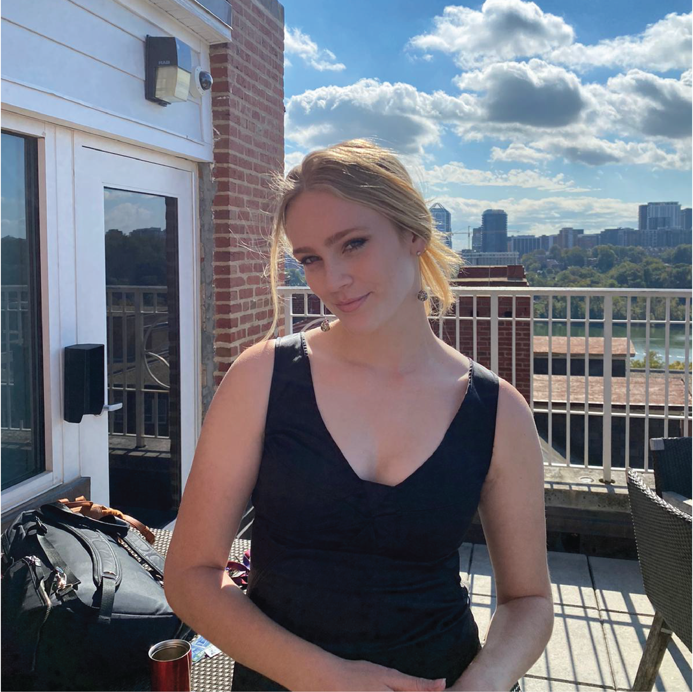
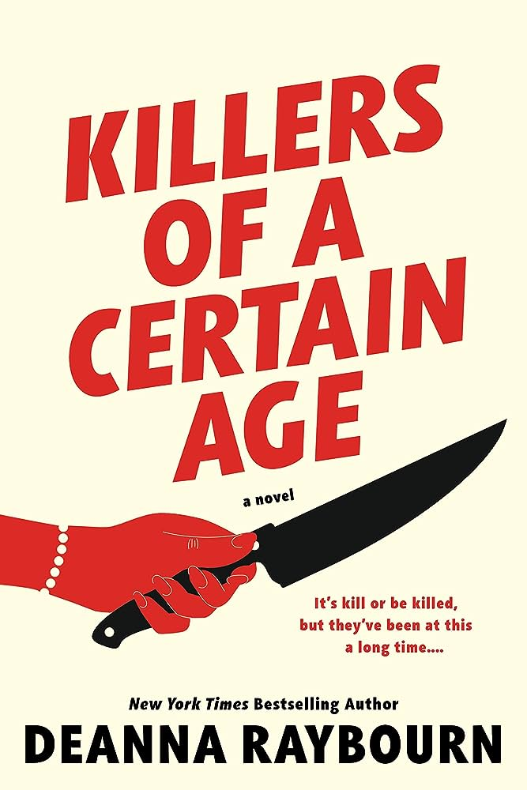
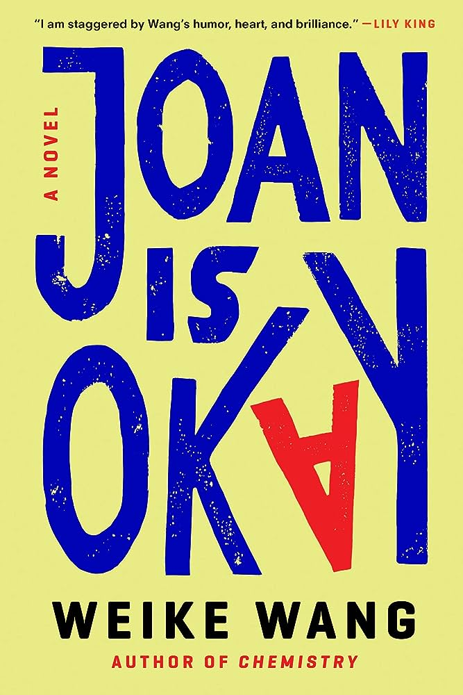

About Me!

Renee DeMaio (she/her) is a fourth year undergraduate student and first year graduate student at Georgetown University. She is pursuing her undergraduate degree in Chinese with a minor in mathematics and her masters in Data Science and Analytics. Renee grew up in Hong Kong and Singapore, but calls Hong Kong home, as she lived there from for most of her adolescence and her family still resides in Hong Kong. At the age of 18, she moved to the United States for the first time to attend university.

Renee’s undergraduate academic interests include Chinese elite sport. Her undergraduate thesis is about how nationalism changed the nature of sport in China from one filled with pride and a focus on development, to one where the need for success and to prove China’s strength on the international stage has created harsh training and competing conditions for athletes. In her graduate studies, she is interested in artificial intelligence as well as biostatistics. She hopes to be able to further pursue both of these topics more extensively as she begins to pursue her master’s degree full time in the fall of 2024. She hopes to eventually get a data science related job in either the sports world or the medical world.
Renee has a few different work experiences. First, she worked for four years as a private mathematics tutor for primary, secondary, and university level students focusing on all topics from basic operations to calculus. Next, since April of 2021 she has been working as a student equipment manager in the Georgetown University Athletics Department Equipment Room. She manages day to day operations for all 30 varsity athletics teams including ordering athletic gear, laundry services, and assisting athletes with whatever they may need. She also manages all of the other student employees. Finally, she works for the Splash Foundation in Hong Kong. Splash is a non-profit organization that teaches migrant domestic workers, kids with special needs, and kids from low-income backgrounds how to swim for free. She has only coaches for the adult programme. When she returns to Hong Kong, she works as a lead coach where she leads lessons for 10-12 students along 1-3 other coaches. Through 12 week programmes, swimmers will go from never having been in the water before, and sometimes being immensely afraid of the water, to knowing how to swim freestyle and float on their front and their back.
Outside of school, Renee spends her time dancing, reading, and running. She is on two dance teams at Georgetown University, Ritmo y Sabor and Groove Theory. She has completed two half marathons, which were the National Women’s Half Marathon in 2022 and 2023. Her favourite books are below!
Favourite Books:
- Crying at H Mart by Michelle Zauner
- Sidelined: Sports, Culture, and Being a Woman in America by Julie Dicaro
- Killers of a Certain Age by Deanna Raybourn
- Joan is Okay by Weike Wang
- If He Had Been with Me by Laura Nowlin
- Happy Place by Emily Henry
 